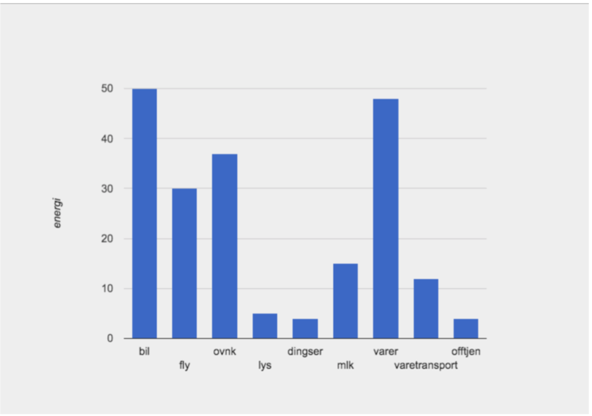

Hei, mitt navn er Ida. Jeg er 25 år gammel og kommer fra Porsgrunn. Jeg er glad i å trene.
Her er GitHub linken til min figur laget i pyret: Trykk her
Laget en egen funksjon for å beregne energiforbruket for bil.
Tok i bruk funksjonen "energy-per-day". Valgte en distanse på 50 km per dag, og at bilen kjører 10 km per liter, og en energi på 10.
